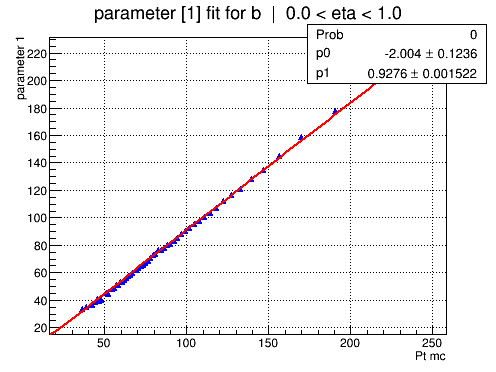
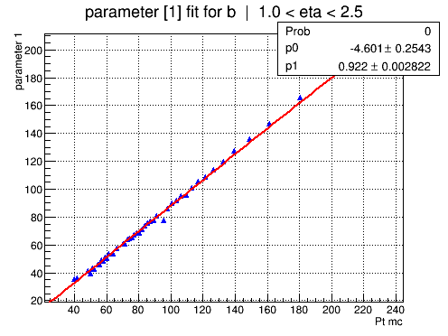
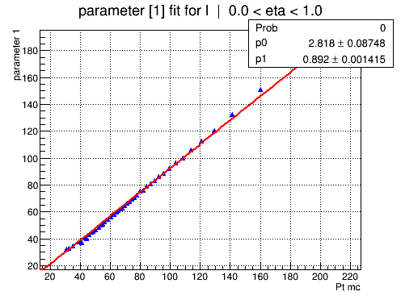
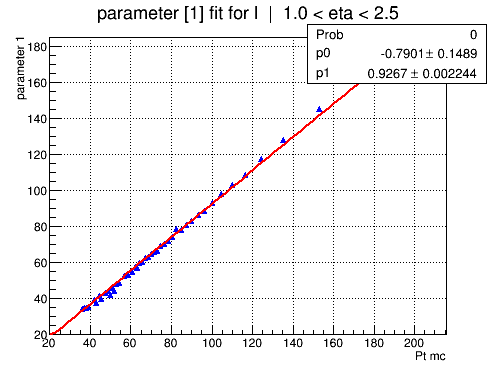

Parameter 1 overview
SBF: [0]*(0.55*exp(-0.5*((x-([1]))/([2]))**2)+(1-0.55)*exp(-0.5*((x-([3]))/([2]+[4]))**2))
ABF: [0]+[1]*x
Run: TEST_V10_limited_TF_jets_lDG
Sample: /scratch/tklijnsm/V10_limited_jets_TTJets.root
1570596 out of 3338597 events used



